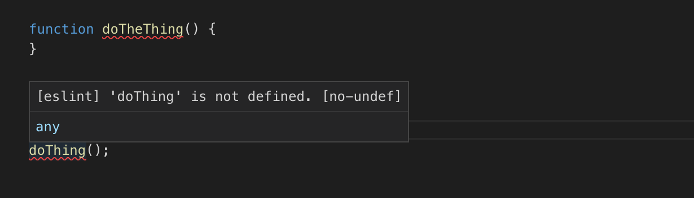
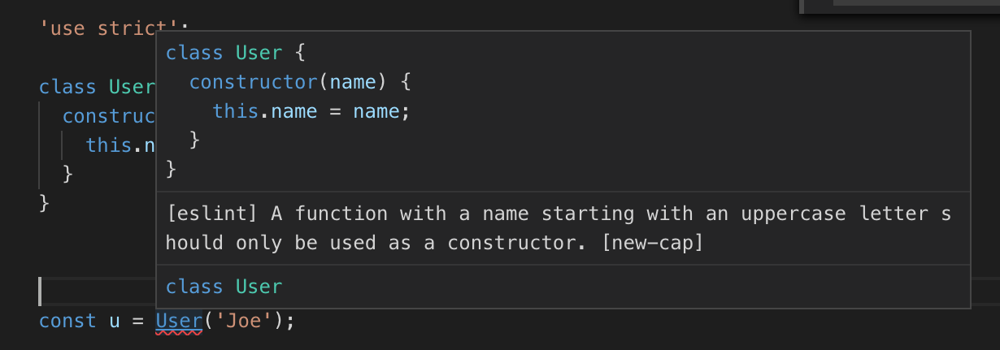
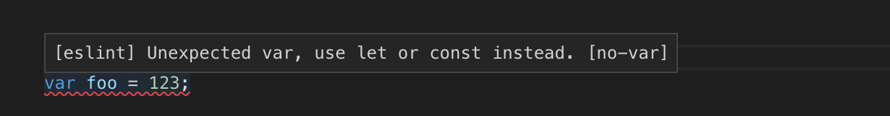
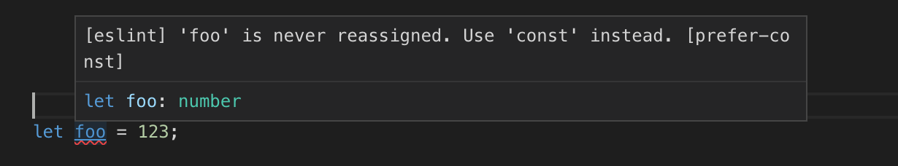

这些文章旨在帮助你学习如何使用 three.js。它们假设你会使用 JavaScript 编程。它们假设你知道什么是 DOM，如何编写 HTML，以及如何在 JavaScript 中创建 DOM 元素。它们假设你知道如何通过 es6 模块 使用 import 和 <script type="module"> 标签。它们假设你知道如何使用 import maps。它们假设你了解一些 CSS，并且知道 CSS 选择器 是什么。它们还假设你了解 ES5、ES6 以及可能的一些 ES7。它们假设你知道浏览器仅通过事件和回调来运行 JavaScript。它们假设你知道什么是闭包。
以下是一些简短的复习和笔记
es6 模块可以通过脚本中的 import 关键字加载，或通过 <script type="module"> 标签内联加载。这里是一个示例
<script type="importmap">
{
"imports": {
"three": "./path/to/three.module.js",
"three/addons/": "./different/path/to/examples/jsm/"
}
}
</script>
<script type="module">
import * as THREE from 'three';
import {OrbitControls} from 'three/addons/controls/OrbitControls.js';
...
</script>
更多细节请参见 这篇文章 的底部。
document.querySelector 和 document.querySelectorAll你可以使用 document.querySelector 来选择匹配 CSS 选择器的第一个元素。document.querySelectorAll 返回匹配 CSS 选择器的所有元素。
onload许多20年前的页面使用类似 HTML 的代码
<body onload="somefunction()">
那种样式已被弃用。将你的脚本放在页面的底部。
<html>
<head>
...
</head>
<body>
...
</body>
<script>
// inline javascript
</script>
</html>
或者 使用 defer 属性。
function a(v) {
const foo = v;
return function() {
return foo;
};
}
const f = a(123);
const g = a(456);
console.log(f()); // prints 123
console.log(g()); // prints 456
在上面的代码中，每次调用函数 a 时都会创建一个新函数。该函数 闭合 变量 foo。这里有 更多信息。
this 的工作原理this 不是魔法。它实际上是一个变量，会像将参数传递给函数一样自动传递给函数。简单的解释是，当你直接调用一个函数时，比如
somefunction(a, b, c);
this 将会是 null（在严格模式或模块中），而当你通过点操作符调用函数时 .，例如
someobject.somefunction(a, b, c);
，this 会被设置为 someobject。
人们容易困惑的部分是在回调函数上。
const callback = someobject.somefunction; loader.load(callback);
不会像经验不足的人所期望的那样工作，因为当 loader.load 调用回调时，它并不是用点操作符 . 来调用的，所以默认情况下 this 将是 null（除非加载器明确将其设置为某个值）。如果你希望在回调发生时 this 是 someobject，你需要通过将其绑定到函数来告诉 JavaScript。
const callback = someobject.somefunction.bind(someobject); loader.load(callback);
var 已被弃用。请使用 const 和/或 let没有理由 永远 使用 var，现在使用它完全被认为是不好的做法。如果变量永远不会被重新赋值（大多数情况下都是这样），请使用 const。在那些值会变化的情况下使用 let。这将有助于避免大量的错误。
for(elem of collection)，使用 for(elem in collection)for of 是新的，for in 是旧的。for in 有问题，for of 解决了这些问题。
例如，你可以迭代对象的所有键/值对
for (const [key, value] of Object.entries(someObject)) {
console.log(key, value);
}
forEach、map 和 filter数组添加了函数 forEach、map 和 filter，并且在现代 JavaScript 中被广泛使用。
假设一个对象 const dims = {width: 300, height: 150}
旧代码
const width = dims.width; const height = dims.height;
新代码
const {width, height} = dims;
解构也适用于数组。假设有一个数组 const position = [5, 6, 7, 1];
旧代码
const y = position[1]; const z = position[2];
新代码
const [, y, z] = position;
解构也适用于函数参数
const dims = {width: 300, height: 150};
const vector = [3, 4];
function lengthOfVector([x, y]) {
return Math.sqrt(x * x + y * y);
}
const dist = lengthOfVector(vector); // dist = 5
function area({width, height}) {
return width * height;
}
const a = area(dims); // a = 45000
旧代码
const width = 300;
const height = 150;
const obj = {
width: width,
height: height,
area: function() {
return this.width * this.height
},
};
新代码
const width = 300;
const height = 150;
const obj = {
width,
height,
area() {
return this.width * this.height;
},
};
...剩余参数可以用来接收任意数量的参数。例如
function log(className, ...args) {
const elem = document.createElement('div');
elem.className = className;
elem.textContent = args.join(' ');
document.body.appendChild(elem);
}
扩展运算符可以用来将可迭代对象展开为参数
const position = [1, 2, 3]; someMesh.position.set(...position);
或者复制数组
const copiedPositionArray = [...position]; copiedPositionArray.push(4); // [1,2,3,4] console.log(position); // [1,2,3] position is unaffected
或者合并对象
const a = {abc: 123};
const b = {def: 456};
const c = {...a, ...b}; // c is now {abc: 123, def: 456}
class在 ES5 之前，创建类对象的语法对大多数程序员来说是不熟悉的。从 ES5 开始，你现在可以使用 class 关键字，这种语法更接近 C++/C#/Java 的风格。
Getter 和 Setter 在大多数现代语言中都很常见。ES5 的 class 语法使它们比 ES5 之前更容易使用。
这在回调函数和 Promise 中尤其有用。
loader.load((texture) => {
// use texture
});
箭头函数将 this 绑定到创建箭头函数时的上下文。
const foo = (args) => {/* code */};
是
const foo = (function(args) {/* code */}).bind(this));
的快捷方式。有关 this 的详细信息，请参见上面的链接。
Promise 有助于异步代码。Async/await 有助于使用 Promise。
它是一个过于庞大的主题，无法在此详细说明，但您可以 在这里阅读关于 Promise 的内容 和 在这里阅读关于 async/await 的内容。
模板字符串是使用反引号而不是引号的字符串。
const foo = `this is a template literal`;
模板字符串基本上有两个功能。一是它们可以多行
const foo = `this is a template literal`; const bar = "this\nis\na\ntemplate\nliteral";
foo 和 bar 上面是相同的。
另一个是你可以退出字符串模式并使用 ${javascript-expression} 插入 JavaScript 代码片段。这就是模板部分。例如：
const r = 192;
const g = 255;
const b = 64;
const rgbCSSColor = `rgb(${r},${g},${b})`;
或者
const color = [192, 255, 64];
const rgbCSSColor = `rgb(${color.join(',')})`;
或者
const aWidth = 10;
const bWidth = 20;
someElement.style.width = `${aWidth + bWidth}px`;
虽然你可以按自己选择的方式格式化代码，但至少有一个约定你应该了解。JavaScript 中的变量、函数名、方法名都是小写驼峰式命名（lowerCasedCamelCase）。构造函数和类名是大写驼峰式命名（CapitalizedCamelCase）。如果你遵循这个规则，你的代码将与大多数 JavaScript 代码保持一致。许多 代码检查工具，即检查代码中明显错误的程序，如果你使用了错误的大小写，会指出错误，因为遵循上述约定，它们可以知道你何时使用不正确。
const v = new vector(); // clearly an error if all classes start with a capital letter const v = Vector(); // clearly an error if all functions start with a lowercase letter.
当然可以使用你想要的任何编辑器，但如果你还没有尝试过，可以考虑使用Visual Studio Code来进行JavaScript开发，并在安装后设置eslint。可能需要几分钟来进行设置，但它会极大地帮助你发现JavaScript中的错误。
一些示例
如果你启用了no-undef规则，那么通过ESLint，VSCode会提示你很多未定义的变量。

在上面你可以看到我把 doTheThing 错拼成了 doThing。在 doThing 下有一个红色波浪线，鼠标悬停上去它告诉我未定义。一个错误被避免了。
如果你使用 <script> 标签来引入 three.js，使用 THREE 会收到警告，所以在你的 JavaScript 文件顶部添加 /* global THREE */ 来告诉 eslint THREE 存在。（或者更好地，使用 import 😉）

上面你可以看到 eslint 知道 UpperCaseNames 是构造函数的规则，因此你应该使用 new。另一个错误被捕捉并避免了。这是 new-cap 规则。
有 成百上千的规则可以开启、关闭或自定义。例如，上面我提到你应该使用 const 和 let 而不是 var。
在这里我使用了 var，它提醒我应该使用 let 或 const。

在这里我使用了 let，但它发现我从未更改这个值，所以建议我使用 const。

当然，如果你更愿意继续使用 var，你可以直接关闭那个规则。正如我上面所说的，我更喜欢使用 const 和 let 而不是 var，因为它们效果更好并且可以防止错误。
对于那些你确实需要覆盖规则的情况，你可以添加注释来禁用它们，适用于单行或一段代码。
大多数现代浏览器都会自动更新，因此使用所有这些功能将帮助你提高工作效率并避免错误。话虽如此，如果你正在进行一个必须支持旧浏览器的项目，有一些工具可以将你的 ES5/ES6/ES7 代码转译回 ES5 之前的 Javascript。